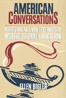

An inside look at one revealing battle over multicultural education
An inside look at one revealing battle over multicultural education


 An inside look at one revealing battle over multicultural education
An inside look at one revealing battle over multicultural education

|  |
American ConversationsPuerto Ricans, White Ethnics, and Multicultural EducationEllen Biglerpaper EAN: 978-1-56639-688-2 (ISBN: 1-56639-688-3) |
"Using lively dialogue and memorable anecdotes in school and community settings, Ellen Bigler…convincingly describes the tensions that result when a group of people is excluded from the conversation. It asks readers—educators and citizens of all backgrounds—to consider what it means to be an American as we begin the twenty-first century."
—Sonia Nieto, University of Massachusetts, Amherst
Growing numbers of working-class Puerto Ricans are migrating from larger mainland metropolitan areas into smaller, "safer" communities in search of a better quality of life for themselves and their families. What they may also encounter in moving to such communities is a discourse of exclusion that associates their differences and their lower socioeconomic class with a lack of effort and an unwillingness to assimilate into mainstream culture. In this ethnographic study of a community in conflict, educator and anthropologist Ellen Bigler examines such discourses as she explores one city's heated dispute that arose over bringing multiculturalism and bilingual education into their lives and their schools' curricula.
The impassioned debate that erupted between long-time white ethnic residents and more recently arrived Puerto Rican citizens in the de-industrialized city the author calls "Arnhem" was initially sparked by one school board member's disparaging comments about Latinos. The conflict led to an investigation by the New York State Education Department and to attempts to implement multicultural reforms in the city's schools. American Conversations follows the ensuing conflict, looks at the history of racial formation in the United States, and considers the specific economic and labor histories of the groups comprising the community in opposition. Including interviews with students, teachers, parents, and community leaders, as well as her own observations of exchanges among them inside and outside the classroom, Bigler's book explores the social positions, diverging constructions of history, and polarized understandings of contemporary racial/ethnic dynamics in Arnhem. Through her retelling of one community's crisis, Bigler illuminates the nature of racial politics in the United States and how both sides in the debate over multicultural education struggle to find a common language.
American Conversations will appeal to anyone invested in education and multiculturalism in the United States as well as those interested in anthropology, sociology, racial and ethnic studies, educational institutions, migration and settlement, the effects of industrial restructuring, and broad issues of community formation and conflict.
Excerpt available at www.temple.edu/tempress
"American Conversations is an analysis of conflicts over multicultural education in a small upstate New York city and the potential of critical pedagogy to make these battles unnecessary in the future."
—Inequalities
"American Conversations is based in the upstate New York city of Arnhem, and explores the various perceptions of multicultural education held by different actorsin the city's education system. The city is into its third decade of economic decline with an aging Euro-American population determined to prevent increases in property taxes and viewing spending initiatives as the granting of special favors to the undeserving. The growing Puerto Rican population in the city's schools were caught in this restrictive and hostile environment and education became the public site of contentious discourse about what characterizes American identity. Anthropologist Ellen Bigler examines the conflict through conversations with students, teachers, parents, and community leaders, particularly describing the feelings of alienation among many in Arnhem's Puerto Rican community and the failure of educators to appreciate this problem."
—SAGE Race Relations Abastracts
"...a resource for anyone engaged in socially transformative work in education."
—Anthropology and Education Quarterly
"This book offers undergraduates (and curious sociologists) a voyeuristic glimpse into the classroom experiences of Puerto Rican children in mainland school systems. Bigler takes an unswervingly critical position on the issues but also manages to suggest a realistically conceived course of action, with all the requisite warnings about the institutional supports necessary to make such a vision happen."
—Contemporary Sociology
Acknowledgments
Introduction: Talking "American"
1. The Making of Arnhem, the "Friendly City"
2. Marginality, Mobility, and the Melting Pot
3. Puerto Ricans Enter a Racialized Social Order
4. Telling Stories
5. Dangerous Discourses
6. Inclusion and Exclusion in the Classroom
7. After/Words
Notes
Bibliography
Index
Ellen Bigler is an Assistant Professor at Rhode Island College where she holds a joint appointment in Educational Studies and Anthropology. An educator in New York State schools for fourteen years, she also served as a consultant to the New York State Department of Education on its K-12 Latino curriculum project, Latinos in the Making of the USA: Yesterday, Today, and Tomorrow.
Education
Latino/a Studies
Sociology
Puerto Rican Studies, edited by Luz del Alba Acevedo, Juan Flores, and Emilio Pantojas-García.
The objective of Puerto Rican Studies, edited by Luz del Alba Acevedo, Juan Flores, and Emilio Pantojas-García, is to bring to publication work on the Puerto Rican experience that is of interest to a wide range of audiences beyond the fields of Puerto Rican and ethnic studies, as well as to provide new insights into other interdisciplinary fields such as cultural studies, women's studies, and urban studies. The series provides a forum for young, creative and daring scholars venturing into nontraditional ways of dealing with issues in Puerto Rican studies. The editors are concerned with producing work that will appeal to the wider North American and English-speaking audiences reaching scholars, writers, activists, feminists, and intellectually curious people throughout the hemisphere and Europe.
© 2015 Temple University. All Rights Reserved. This page: http://www.temple.edu/tempress/titles/1329_reg.html.